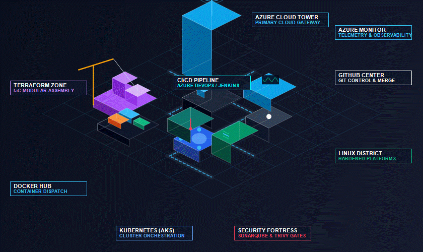
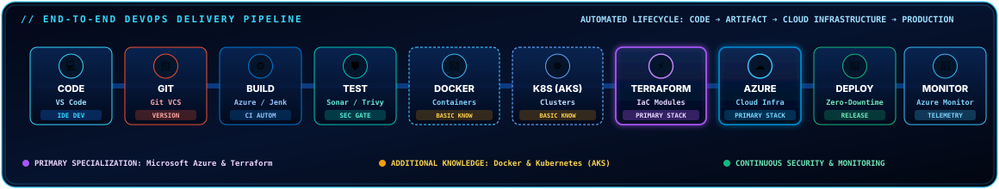

FIRDOUS
WARSI
Architecting modular, self-healing cloud infrastructure with Terraform and orchestrating high-velocity CI/CD pipelines across Microsoft Azure.

👨💻 Identity & Background
Results-driven DevOps Engineer with hands-on experience in cloud infrastructure automation, CI/CD execution, and deployment strategy management. Based in Howrah, West Bengal, India.
Specializes in designing and provisioning scalable cloud architecture using Terraform and implementing robust automated release management through modern deployment toolchains. Proven expertise in building cloud monitoring frameworks, automating pipeline structures, and conducting swift system troubleshooting to ensure maximum uptime.
🏛️ Infrastructure as Code First
"If it's not declared in code, it doesn't exist in production."
Crafting modular, reusable Terraform scripts with remote state locking, automated plans, and environment isolation to eliminate configuration drift.
🛡️ Shift-Left Continuous DevSecOps
"Speed without security gates is merely accelerated failure."
Embedding static code quality gates via SonarQube and container vulnerability sweeps via Trivy into delivery pipelines prior to deployment.

Visual Delivery Pipeline
A continuous delivery flow moving code from developer IDEs into self-healing, monitored cloud environments.

Code is pushed to Git, triggering automated builds in Azure DevOps / Jenkins. SonarQube checks code health while Trivy scans container artifacts before publishing.
Terraform provisions Azure virtual networks, VMs, and cluster foundations. Application pods are scheduled on AKS with real-time telemetry piped to Azure Monitor.
DevOps Engineer
VMs, VNets, NSGs, Load Balancers, Storage Accounts) on Microsoft Azure using reusable, modular Terraform scripts.
Airport Baggage Tracking System
A critical cloud tracking infrastructure meant to maintain real-time telemetry on active airport conveyor elements and baggage movement vectors to enhance general sorting accuracy during peak operation.
Architected and provisioned the entire application foundation on Azure using structured Terraform modules.
Configured core automated build-and-release delivery pipelines using Azure DevOps and Jenkins.
Constructed end-to-end active cluster dashboards using Azure Monitor to instantly expose microservice trends.
Handled immediate log evaluations, debugged live pod deployment errors in Kubernetes, and maintained uptime.
Live GitHub Telemetry
Real-time contribution metrics from github.com/firdouswarsi

Let's Build Something Scalable Together
Always open to discussing cloud architecture, Terraform IaC automation, CI/CD pipelines, or exciting DevOps engineering opportunities.